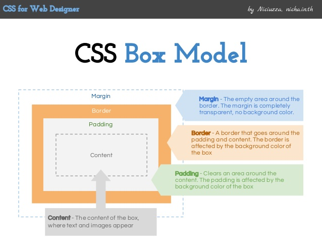

HTML i CSS
Źródło tej notatki https://developer.mozilla.org/pl/docs/Learn/Getting_started_with_the_web/HTML_basics
HTML jest językiem znaczników (ang. markup language).
Składa się z serii znaczników (tagów), których używa się do zamknięcia, opakowania różnych części treści, tak aby wyglądały i/lub działały w określony sposób. Z pomocą tagów możesz ze słów czy obrazów zrobić linki do innych stron, etc.
Podstawowa struktra
Element
Podstawową strukturą jest element.
 Mamy tutaj:
Mamy tutaj:
- Tag otwierający
- Tag zamykający
- Zawartość
Razem tworzą one nasz element
Elementy mogą zawierać także atrybuty

Atrybut zawsze powinien mieć:
- Spację między nazwą tagu a nazwą atrybutu (lub innego atrybutu, jeśli dany element ma więcej atrybutów).
- Nazwę atrybutu oraz znak równości.
- Wartość podaną w "cudzysłowie"
Atrybuty class i id są uniwersalnymi atrybutami dla wszystkich tagów. Pozwalają one na łatwe zarządzanie elementami strony poprzez przypisywane im identyfikatorów i określanie ich przynależności do różnych klas. (ID musi być unikalne, klasa już nie)
Potem można używać tego do zmiany stylów w CSS, czy też w skryptacj w JS.
Warto pamiętać, że elementy mogą mieć wiele klas jednocześnie
<button class="btn again">Again!</button>
Elementy mogą się w sobie zagnieżdżać
<p>My cat is <strong>very</strong> grumpy.</p>
Elementy mogą być też puste - gdy nie zawierają żadnej treści.
Nie muszą wtedy mieć tagu zamykającego.
<img src="images/firefox-icon.png" alt="My test image" />
Struktura plików
Całość zawsze jest zawarta w tagach HTML.
<!DOCTYPE html>
<html>
<head>
<meta charset="utf-8" />
<title>My test page</title>
</head>
<body>
<img src="images/firefox-icon.png" alt="My test image" />
</body>
</html>
Opisy elementów:
<!DOCTYPE html>- typ dokumentu (opcjonalny)<html>- element html zawiera całą treść strony i czasem nazwany jest elementem bazowym (ang. root element). Wskazuje, gdzie zaczyna i kończy się kod HTML.<head>-element head to tzw. nagłówek strony. Ten element działa jak kontener dla wszystkich elementów, które chcesz umieścić na stronie HTML, ale nie w treści, które wyświetlasz przeglądającym twoją stronę. Ma on w sobie na ogół konfigurację.<body>- element body. Zawiera onczęść właściwą strony, czyli jej zawartość.<meta charset="utf-8">- reprezentuje metadane, które nie mogą być reprezentowane przez inne elementy związane z metadanymi w HTML. Tutaj ustawia zestaw znaków.<title>- Ustawia tytuł strony, który jest tytułem wyświetlanym na karcie przeglądarki
Przykładowe elementy i tagi
Komentarze
<!-- tekst komentarza -->
Tekst
Nagłówek <h1>
Nagłówki opisujemy jako h1 (najgłówniejszy), h2,h3...
<h1>My main title</h1>
<h2>My top level heading</h2>
<h3>My subheading</h3>
<h4>My sub-subheading</h4>
Podstawy
Paragrafy (<p>) służą do dzielenia tekstu na paragrafy
<p>This is a single paragraph</p>
<b>Tekst pogrubiony</b>
<!-- Jest to markup fizyczny alternatywą logiczną jest znacznik <strong> -->
<i>tekst kursywą</i>
<code>Tekst czcionką programistyczną</code>
<br />
<!-- Znak nowej linii -->
Lista <ul> <ol>
unordered list <ul> - lista nieuporządkowana
<ul>
<li>technologists</li>
<li>thinkers</li>
<li>builders</li>
</ul>
ordered list <ol> - lista uporządkowana.
Jest dla niej kilka typów np: A -oznaczanie kolejnych punktów jako abc i - osnaczanie rzymskimi cyframi
<ol>
<li>pierwszy</li>
<li>drugi</li>
<li>trzeci</li>
</ol>
Linki <a>
Aby utworzyć odnośnik musimy użyć prostego elementu — a — "a" jest skrótem od angielskiego "anchor".
<a href="https://www.mozilla.org/en-US/about/manifesto/">Mozilla Manifesto</a>
- href (hypertext reference) - link (może to być link nie tylko do innej strony, lecz także do elementu tej samej strony)
<a href="#section--1">Sekcja 1</a>
<!-- .... -->
<section class="section" id="section--1">
<!-- Tu nas przeniesie kliknięcie -->
</section>
Jeśli nasz link będzie prowadził do # to zostaniemy przeniesieni na początek strony.
Możemy też łatwo tworzyć własne kotwice
<a name="moja_sekcja">Moja sekcja</a>
Obraz <img>
Używamy do tego tagu img
<img src="images/firefox-icon.png" alt="My test image" />
src- źródło obrazualt- tekst alternatywny - pokazuje się w razie problemów z wyświetleniem.
Organizacja rzeczy na stronie
DIV <div>
div - jest to element który nie robi nic. Służy on jako kontener, dzięki któremu można łatwo podzielić i pogrupować elementy.
Wejścia
pole tekstowe i przycisk (bez JS-a bezuzyteczne)
<input type="text" placeholder="Domyślny tekst" /> <button>GIT!</button>
SPAN <span>
Tak jak <div> nie robi nic, po prostu pozwala łatwo zapanować nad elementami tekstu.
<h1>
słowo
<span class="highlight">ważne słowo</span>
Kolejne słowo<br />
</h1>
Możemy w ten sposób łatwo zarządzać jakimiś fragmentami tekstu przypisując je np do klas.
Przekierowywanie strony TODO
CSS
CSS służy do ustalania stylu naszej strony. Analogicznie do JS-a może być umieszczony w pliku html, lub w oddzielnym pliku.
<html>
<head>
<title>Learning CSS</title>
<style>
body {
background-color: green;
}
</style>
</head>
<body></body>
</html>
Osadzamy to za pomocą linku (ale nie tagiem a - anchor, tylko link)
<title>Learning CSS</title>
<link href="style.css" rel="stylesheet">
</head>
Możemy też przypisać dany styl do poszczególnych elementów
<div style="display: flex; flex-direction: column"></div>
Składnia CSS
Poniżej widać, że przypisujemy dane parametry dla wszystkich elementów należących do tagu body tzn do wszystkich elementów dziedziczących po nim.
body {
background-color: yellow;
font-family: sans-serif;
}
Pliki CSS zawierają listy elementów, które mają mieć zmienione wartości, mogą one opisywać zarówno to jak mamy zmienić niektóre tagi, jak i plasy, czy też edytować poszczególne ID.
Klasa - do zmian właściwości klasy używamy nazwy klasy poprzedzonej kropką .
Klasa może być też łączona z typem np p.moja_klasa - czyli wszystkie paragrafy należące to tej klasy.
<p class="mojaklasa">Przykładowa klasa</p>
.mojaklasa {
color: red;
}
ID - tutaj zamiast kropki używamy #
<p id="moj_paragraf">Przykładowa klasa</p>
#moj_paragraf {
color: green;
border: 5px solid black;
}
Co ciekawe widać tutaj właściwość border - może ona mieć więcej niż jedną właściwość - tutaj są to grubość, styl i kolor.
Kilka elementów wystarczy je wymienić po przecinku
input,
button {
padding: 10px;
font-size: 16px;
}
Elementy umieszczone względem innych - jeśli chcemy oznaczyć wszystkie elementy znajdujące się wewnątrz innych to wypisujemy obok siebie, tylko bez przecinków
#moj-element h2 {
color: black;
} /* będzie dotyczyć tylko nagłówków h2 wewnątrz elementu z id moj-element */
Wszystko
Za pomocą * można łatwo "złapać" wszystkie elementy.
Można to użyć, aby łątwo dostosować np. marginesy wszystkich elementów.
* {
margin: 0;
padding: 0;
box-sizing: border-box; /* ta właściwość zmiania liczenie rozmiaru, od teraz ustalony rozmiar dotyczy zawartości wraz z paddingiem, a nie tylko zawartości */
}
Warto pamiętać, że nie wszystkie właściwości są dziedziczone, np padding dotyczy tylko wskazanego elementu, elementy wewnątrz nie będą zmieniane.
Wartości wymiarów
Wszelkie wymiary mogą być opisywane z użyciem dwóch typów jednostek:
- Bezwzględnych -
pxcmmminpt(piksele, centymetry, milimetry, cale, punkty etc) - wszystkie te (za wyjątkiem pikseli) skalują się do wymiarów urządzenia - Względnych - te już są nieco bardziej skomplikowane:
%- procent wymiarów rodzicavwvh- 1% wysokości lub szerokości okna przeglądarkiem- liczone względem rozmiaru fontu elementu (2em to rozmiar 2 razy większy niż obecny font)- inne...
Zmienne CSS
Zmienne CSS mogą zawierać różne wartości dostępne w całym dokumencie.
/* najprościej jest zadeklarować je w roocie, wtedy są dostępne wszędzie */
:root {
--glowny-kolor-tla: brown;
}
.blok {
--glowny-kolor-tla: green;
}
.jeden {
color: white;
background-color: var(
--glowny-kolor-tla
); /* przy użyciu musi być to umieszczone w var()*/
}
/*Jeśli element .jeden znajdzie się wewnątrz elementu .blok, wtedy wartość zmiennej z
roota zostanie przesłonięta przez wartość zadaną w bloku*/
Użyteczne wartości
- opacity - przezroczystość określana od 0 do 1 (przydatna do chowania i pokazywania elementów)
- display - sposób w jaki sposób powinny być ułożone elementy w danym pojemniku. Przykładowe wartości:
none- elementy nie będą renderowaneinline- elementy będą ułożone w liniiflex
//TODO opisz dokładniej display
Box Model
Jest to koncepcja mówiąca, że każdy element strony powinniśmy postrzegać jako prostokąt z zawartością charakteryzujący się takimi właściwościami jak szerokość wysokość etc.
Właściwości te to:

Dodatkowo jest jeszcze fill area czyli cała przestrzeń znajdująca się w obrębie granicy (border).
I właśnie te parametry możemy z łatwością dostosowywać za pomocą CSS-ów.